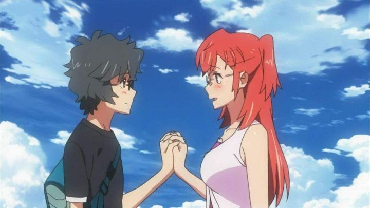

"Wating in the Summer" appears to be something of a modern sleeper hit. By that, I mean I knew virtually nothing about the anime, but looking it up will reveal comments from fans reminiscing about how much they loved it. Originally released in 2012, it took Sentai Filmwork's re-release with a new English dub (in 2019) for it to be on my radar at all, in part to the generic title and cover. The romantic-drama is perhaps best distinguished by the character design. The two lead characters are cute but average looking, with messy hair (bright pink for the girl), and homely fashion sense. And glasses. Yes, both characters wear glasses, a feature common among viewers, but uncommon in cartoon characters, especially the leads, and especially the cute poster-girl lead. I have no doubt that this alone will entice certain viewers to watch the series. The romance between the two is also unique in that the girl is meant to be two years his-senior. While it might not be immediately obvious, the show also happens to be loosely about the hobby of filmmaking: the lead, a high-school boy, is an amateur cinematographer and has the motivation to do something over the coming summer break. Something like making a movie with his friends. And possibly experiencing his first love. Ah, adolescence and summertime... So yeah, "Waiting in the Summer" is a mixture of shows like "Toradora," "The Pet Girl of Sakurasou," and maybe "To Love Run." That last one is because the lead girl happens to be an alien, who crash lands onto Earth after intending to only visit as a tourist. Looking and acting mostly human anyway, Ichika pretends to be a new transfer student at the local Japanese high school, meeting novice filmamker Kaito and his friends, Tetsuro, Kanna and Mio. When they learn Ichika doesn't have a place to live, Kaito agrees to let her stay at his house, a large old-fashioned home that he occupies alone with his older sister (their parents had died), and about to be even more empty as the sister leaves for international work over a few months. The new gang agree to pass their exams and enjoy their summer break together, working on that movie. Ichika's alien secret remains a secret until much later, out of fear of how the others would accept her: even to the viewers, the full extent of her identity and the event of her crash landing remains a mystery for some time. Kaito happened to be there that night when the crash occurred, and has side-effects from it for some reason (there's potential for a huge emotional twist here that doesn't come to pass).The science-fiction aspect of the show is fine, and leads to a fun climax, but it's at odds with what the story is really about, and could have been removed without much consequence. Its inclusion is mostly to add to the expectation that Ichika will have to leave eventually, making any potential for a budding relationship with Kaito all the more tragic. The core of the story is about that summer romance, not just between the two leads, but the entire cast of five. There isn't just a love triangle, but a love pentagon, with A <-> B <- C <- D <- E. Each character hesitates to be honest with their feelings, but also realize that if they don't make a move (before their crush does on someone else), then they'll regret it. While other anime can go for multiple seasons without saying the words "I love you," "Waiting in the Summer" comes out with it by the halfway point, soaking in the complex emotions and heartbreak when a character has to respond, typically by saying "I'm sorry, but I love someone else."  It's effective and powerful, taking full advantage of the nostalgia of youth that Japanese stories always focus on. The strength is more in the characters than the writing itself: I already mentioned that the sci-fi element was unnecessary, that the ending misses some opportunities, and an epilogue scene hints at a happy ending that eventually comes, without revealing how it could have taken place. In exchange for making the friends feel more real, we don't get any conclusion for any of them: by the end (we get an OVA that takes place a couple years later), they still secretly pine for their crush, perhaps just more accepting that it might forver be unrequited. Then there's a few instances of fanservice, like when the gang drink alcohol (assuming it was just punch), multiple times, and not realizing what it was even after they got drunk and teased each other in a game of truth or dare. Or the case of Mio, who is revealed to be a genuine nudist: yes, it adds to her character's anxiety when in public, but was likely just an excuse to be shown buck-naked in her home without viewers judging her (or the director). Whatever qualms I can pick out, I admit "Waiting in the Summer" is an exccelent teenager-romance, for having characters acknowledge the crushes they have and telling their story in a concise 12 episodes (plus 1 OVA). And while the filmmaking aspect was under-utilized, there are a lot of homages to other films, be it daydreaming about a cinematic romantic goodbye, or going on a date to the movie theater to watch Madhouse's anime "Highschool of the Dead." There's even loose references to a character working with directory George Lucas, and a "real-life" organization called "MIB - Japan Branch" to deal with aliens... I'm not sure how they got the copyright clearance to go through these jokes, but I'll try not to think about it. The art style of the anime is bright and colorful, pleasent to look at from school to the Japanese countryside. Again, the character designs are the unique bit, featuring glasses, messy hair, and body proportions that are slightly more realistic (my first impression of Kaito was that he actually looked like a first-year highschooler, which I don't think I've ever said about anime characters that typically look like they're from college). The music is pleasent, with one track sounding like the theme from "Friends," and the actual ending theme being used to good effect to punctuate emotional moments. I'm normally an English dub guy, and after an episode, I did come to appreciate Sentai Filmworks' new dub, giving appropriate performances for such an emotionally-charged show, and bringing life to the complex characters. However, I admit the original Japanese dub just works better. I only noticed that because I switched back and forth a couple times when watching, due to some dialogue lines sounding weird: sure enough, Sentai's English translation doesn't always match the original writing, sometimes ruining jokes. It's easy to have missed "Waiting in the Summer," an anime with a generic title, and not much to have stood out against other shows in 2012. But I'm happy that it got new life in a physical release with a new English dub. In a genre typically overwhelmed with sexy comedies or save-the-world fantasy, it's nice to sit down with a genuine romance every once in a while, one to make your heart melt as you snuggle up in a blanket and a box of tissues. "Waiting" lets you do that in a sitting that is as brief as the summer.
- "Ani" More reviews can be found at : https://2danicritic.github.io/ Previous review: review_Voices_of_a_Distant_Star Next review: review_Watership_Down